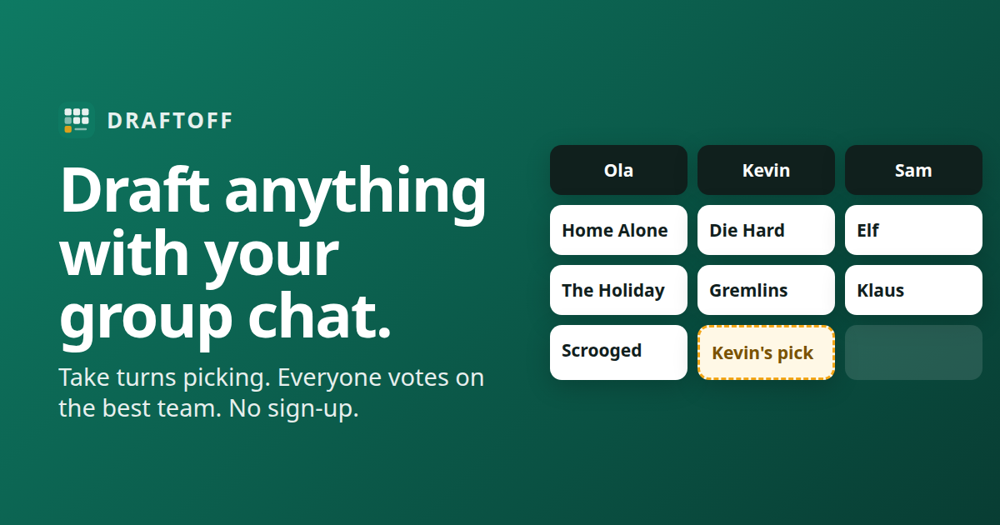

Free · no sign-up · no app
Draft anything. Let the group chat decide.
Pick a topic (best Christmas movies, best snacks, best 2000s songs), share one link, and take turns picking in snake order. When the draft is done, everyone in the chat votes on whose team is best.

1
Pick a topic
30 ready topics with suggestions, or type your own.
2
Draft in turns
2–8 drafters, 3–8 picks each, a timer per pick with autopick.
3
The chat votes
Best team and pick of the draft, revealed together, with a result card to share.
Support
Found a bug or have an idea? Open an issue at github.com/janwan2003/draft-off/issues. Drafts are deleted after 180 days. See the privacy policy.
About
Draftoff is a free snake-draft game for group chats.